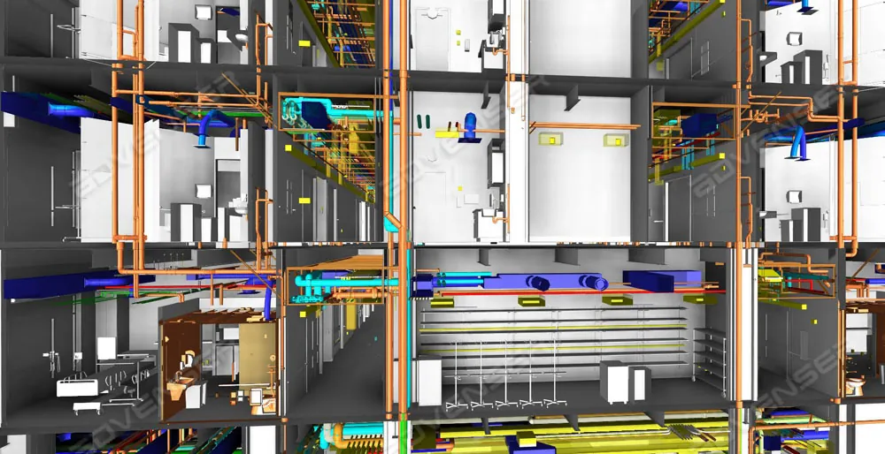

In short: medical oxygen in Kenya is forcing referrals because many facilities cannot guarantee a continuous supply. Cylinder dependence, plants running below capacity, high oxygen cost, weak distribution and limited maintenance skills mean critically ill patients are sent to larger hospitals. Reliable on-site production, piped distribution and planned maintenance are the most practical way to keep patients where they are first admitted.
Why Medical Oxygen Problems Lead to Referrals

Medical oxygen is a basic life-saving treatment, used for pneumonia, childbirth complications, trauma, surgery and critical care. When a hospital cannot give oxygen continuously, the only safe option is often to send the patient somewhere that can.
Researchers writing on medical oxygen in Kenya have noted that critically ill patients who need ICU or high dependency care are mostly referred to Level 5 and national referral hospitals, because lower-level facilities often have little or no reliable oxygen access. Many dispensaries and health centres depend on cylinders supplied by larger county hospitals.
The need is real. A Kenyan study of more than 4,000 adults admitted to medical wards found that about a quarter arrived at hospital with low blood oxygen. Each referral costs time, adds transport risk and puts extra pressure on the receiving hospital.
The Medical Oxygen Supply Gap in Kenya
Kenya has made progress on medical oxygen since the COVID-19 pandemic, and access has improved in most counties. The gap is still large. The key figures below are taken from published reports and are summarised in our own words.
| Issue | What reports show |
|---|---|
| National supply vs need | The Kenya Medical Oxygen Roadmap 2025–2030 estimates annual need at 62–64 billion litres against production capacity of about 12 billion litres. |
| PSA plants | Kenya has roughly 70 PSA oxygen plants, and the Ministry of Health reports most are not operating at optimal capacity. |
| Oxygen quality checks | Only a small share of assessed facilities had oxygen analysers to confirm purity. |
| Skills for maintenance | A national study counted only 495 medical engineering technologists and technicians. |
| Investment needed | The Roadmap estimates about KSh 37 billion over six years, most of it for capital investment in oxygen systems. |
The Main Medical Oxygen Issues in Kenyan Hospitals
1. Heavy dependence on cylinders
Cylinders are still the most common oxygen supply in many facilities. They need transport, refilling, handling and storage, and a single delayed delivery can leave a ward without oxygen. Cylinders placed beside individual beds are also less efficient and harder to manage safely than a piped system.
2. Oxygen plants that are not running at full capacity
Installing a plant is only the first step. Plants that lack servicing, spare parts, stable power or trained operators lose output, and some stop working altogether. During the 2021 crisis, reports showed a large share of hospital oxygen plants were out of service while patient numbers surged.
3. Weak distribution inside the hospital
Producing oxygen is not enough if it cannot reach the bedside. Hospitals without pipelines, outlets and alarms rely on moving cylinders between wards, which wastes time and gas and increases the risk of running out unnoticed.
4. Limited maintenance and technical skills
PSA plants, compressors and pipeline systems need regular preventive maintenance. With very few medical engineering professionals nationally, many facilities cannot service equipment early enough to prevent breakdowns. Our guide to biomedical engineering maintenance in Kenya explains how to plan this.
5. High cost and funding delays
Cost limits how much oxygen patients receive and how long they stay on it. Suppliers have also reported delayed payments from public facilities, which add to pending bills and can disrupt deliveries. The next section looks at the medical oxygen price in more detail.
6. Surges, hoarding and poor forecasting
When COVID-19 pushed demand far above normal, cylinders were hoarded and several major referral hospitals, including Kenyatta National Hospital, suspended planned surgeries to save oxygen for emergencies. The lesson for hospitals is to plan capacity for peak demand and to keep a reserve supply.
Medical Oxygen Price in Kenya: What Drives the Cost
There is no single national medical oxygen price. What a hospital pays depends on how oxygen is supplied and on local conditions. Published reports give an idea of the range, though they differ by year, county and supplier:
- A county hospital in Murang'a reported that an 8.5 cubic metre cylinder cost about KSh 6,000, while a liquid oxygen delivery cost about KSh 700,000.
- Refill prices for cylinders were reported to have roughly tripled during the 2021 crisis before easing.
- Researchers have estimated that a patient on oxygen can use several cylinders a day, so daily cost can climb quickly for public referral hospitals.
The main cost drivers are:
- Transport and distance: remote counties pay more to move heavy cylinders.
- Cylinder lease, deposit and refill fees: these add to the gas price itself.
- Taxes on cylinders and consumables: medical oxygen is VAT-exempt, but one study estimated taxes make up a large part of the cost of a medical gas cylinder.
- Supplier competition: limited competition keeps prices high in some regions.
- Wastage: leaks, unused cylinder residue and poor monitoring raise the real cost per patient.
Medical Oxygen Supply Options for Hospitals
The cheapest option on paper is not always the most reliable. The right medical oxygen supply depends on how much oxygen you use, your power supply and how far you are from suppliers:
- Cylinder manifolds: practical for small facilities and a dependable reserve for larger ones.
- PSA oxygen plants: produce oxygen on site from air. Well suited to hospitals with steady demand that want to reduce cylinder dependence and long-term cost.
- Bulk liquid oxygen: suitable for high-volume hospitals with good road access and proper tank installation.
- Oxygen concentrators: useful for small facilities and remote clinics with limited demand and reliable electricity.
- Hybrid systems: a primary plant with a cylinder reserve, which gives the best protection against supply interruption.
Whichever source you choose, a medical gas pipeline system is what delivers oxygen safely to the bedside, with isolation valves and alarms. See our overview of medical gas systems and our guide to medical gas copper pipes and ISO 7396-1.
How Hospitals Can Reduce Oxygen-Related Referrals
- Assess your demand. Measure current and peak oxygen use by ward, and plan for growth.
- Secure a primary source and a reserve. Do not rely on a single cylinder supplier or a single plant.
- Pipe oxygen to where it is needed. Theatres, ICU, maternity, paediatrics and emergency come first.
- Install alarms and monitoring. Staff should know about low pressure or source changeover before patients are affected.
- Check oxygen quality. Use an oxygen analyser to confirm purity from plants and cylinders.
- Put maintenance under contract. Preventive servicing of plants, compressors and pipelines prevents most breakdowns.
- Track consumption and leaks. A sudden rise in use often points to a leak or misuse.
- Train clinical and technical staff. People need to know how to operate, switch over and respond to alarms.
How Medware Solutions Helps
We help hospitals move from fragmented cylinder logistics to reliable, centrally managed medical oxygen and gas infrastructure.
- Specialised engineering: medical gas systems designed and installed to ISO 7396-1.
- Complete solutions: pipelines, manifolds, oxygen plants, medical air and vacuum systems.
- Full project support: design, installation, testing, commissioning and maintenance.
- Local experience: work with major healthcare facilities in Kenya.
Frequently Asked Questions
What is the price of medical oxygen in Kenya?
There is no single national price. Reported figures for an 8.5 cubic metre cylinder refill have been around KSh 6,000 at some county hospitals, while liquid oxygen deliveries cost far more per delivery. Price depends on supplier, distance, cylinder lease and deposit, volume and taxes on cylinders and consumables. Always request a written quotation from your supplier.
Why does lack of medical oxygen lead to patient referrals?
Lower-level facilities often cannot guarantee a continuous oxygen supply, so critically ill patients who need oxygen, ICU or high dependency care are sent to larger county and national referral hospitals. Referral delays the start of treatment and overloads the hospitals that receive the patients.
Is medical oxygen supply in Kenya enough?
Not yet. The Kenya Medical Oxygen Roadmap 2025 to 2030 estimates annual need at 62 to 64 billion litres against a production capacity of about 12 billion litres. Access has improved since the COVID-19 pandemic, but many health centres and dispensaries still lack a reliable supply.
Is a PSA oxygen plant cheaper than buying cylinders?
For hospitals with steady, high demand, an on-site PSA plant can lower the running cost per cubic metre compared with repeated cylinder purchases, but it needs capital investment, reliable power and planned maintenance. A demand assessment will show whether a plant, cylinders, liquid oxygen or a hybrid is the better value for your facility.
Does Medware supply and install medical oxygen systems in Kenya?
Yes. Medware Solutions supports hospitals with design, supply, installation, testing, commissioning and maintenance of medical gas pipeline systems, oxygen plants, manifolds, medical air and vacuum systems across Kenya.
How can a hospital reduce referrals caused by oxygen shortages?
Assess oxygen demand, secure a primary source with a reserve, pipe oxygen to the wards that need it, install alarms, keep plants under a planned maintenance programme and monitor consumption for leaks and waste.
Conclusion
Referrals caused by oxygen problems are not inevitable. They are the result of supply, distribution, cost and maintenance gaps that hospitals can close with the right design and a dependable partner. If you are planning a new oxygen plant, upgrading your medical oxygen supply or need support with an existing system, contact Medware Solutions today.
Need reliable medical oxygen for your hospital?
Talk to Medware Solutions about oxygen plants, medical gas pipelines, manifolds, testing and maintenance in Kenya.
Enquire about medical oxygen Request a ConsultationSources and Further Reading
- Citizen Digital, “World Oxygen Day: Oxygen saves lives” (Kenya Medical Oxygen Roadmap 2025–2030 figures)
- Nation Africa, “Can't breathe: why thousands of Kenyan patients are dying” (referral patterns, PSA plants, medical engineering workforce)
- Standard Media, “Murang'a revives oxygen-producing plant to reduce cost” (cylinder and liquid oxygen cost example)
- The Star, “KNH worst hit as oxygen shortage persists” (2021 oxygen crisis)